Roots of the World
What grows slowly, lasts for centuries.
Seven patient creatures that live long and give steadily.
An idle game where every creature lives, ages and dies for good, and you choose what it leaves behind.
Every creature in the garden is born, grows up, grows old and dies, in real time, whether you are watching or not. This is one of them, a Moss Lizard from the Roots of the World.
Bought at the Seed Altar or left behind by a parent. Nothing happens until you plant it.
Small and slow, and the moment you give it a name. This one became Hollowroot.
Its best hours. It gives the garden the most, and its mutations show on its body.
It slows down and gives a little less each hour. The end is close, and you can see it coming.
The garden falls silent.
Lived 14h 00m.
Gave the garden 1522 Root Sap.
First of its line.
Even now, the bark it rested on feels warm.
Their echo takes seed.
An Inherited Seed that carries its lineage, sometimes with a new mutation. The line goes on.
Their form endures, their line ends.
A Relic that keeps its name and its epitaph. The active relic of each garden makes the whole garden stronger.
You get one or the other, never both. Either way, the death also leaves a Vestigio, the first material of the Echo Arc.
The Book of Echoes keeps every creature your garden has held: its name, its species, how it ended and how long it lived. Read back, it becomes the history of your garden.
The Codex keeps the rest: the species you have met, eight lore fragments you unlock by doing things, and the count of what ended, what was kept and what came back.

Nothing new is for sale at the start. As a biome earns, a creature you haven't met appears; only then will the Seed Altar sell you its seed.
Each creature is born under one of six affinities, set by the hour it hatched: Arraigo, Ascua, Fulgor, Brisa, Escarcha and Umbra. Neighbours one step apart help each other and opposites get in each other's way. A biome has twelve spaces, so where you plant counts.
Vestigios combine into Rastro, Impronta, Murmullo and on up to Origen, ten tiers in all. From the fourth tier, an attempt can destroy what you put in. Tiers one to five are in the game now.
What grows slowly, lasts for centuries.
Seven patient creatures that live long and give steadily.

From destruction, the new is born.
Seven volatile creatures that live fast, give a lot and die young.
The Suspended Garden arrives in the first Early Access update and the Luminous Cave in the second. Their fourteen creatures are already drawn.
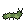
Earth Caterpillar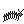
Elder Centipede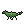
Moss Lizard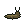
Peat Slug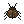
Root Beetle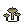
Root Mycelium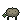
Stone Tortoise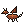
Ash Drake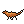
Ash Salamander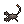
Ash Scorpion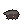
Char Mole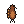
Ember Falcon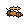
Flame Wasp14 more live in the Suspended Garden and the Luminous Cave. See all 28 creatures in the bestiary
Two more forms can't be bought. You learn them by playing.
One person makes Echoes of the Garden, in public. Updated 13 November 2026. Plans can change, and this page changes with them.
Built in 2026: the garden loop, all 28 species designed, affinities and the first natures, the Echo Arc up to Eco with its Attunement, the Book of Echoes and three languages. You can play it today in your browser.
Aiming for Q2 2027, after a playtest with new players.
It comes after Early Access: trading relics and materials, and Echo Arc tiers six to ten, once Valve has reviewed it.
Species you have not met yet now leave a sign at the Seed Altar, and the Spanish and Italian text had another pass.
Two testers said the first minutes left them with nothing to do and no idea what the game was about. v0.15.0 adds a short guide for the first session.
Species now reveal their nature at their first death, one of them saves everything for the end, and the garden's surplus finally has somewhere to go.